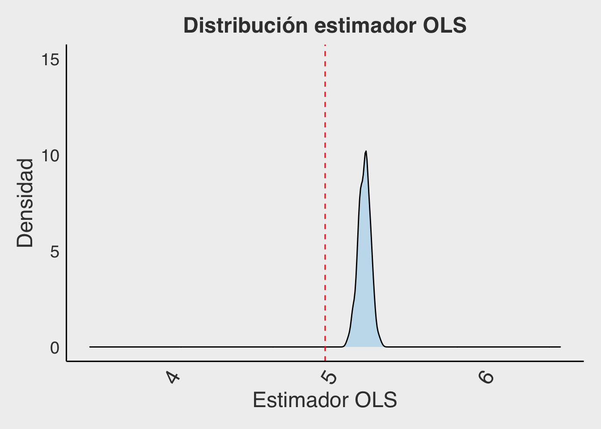
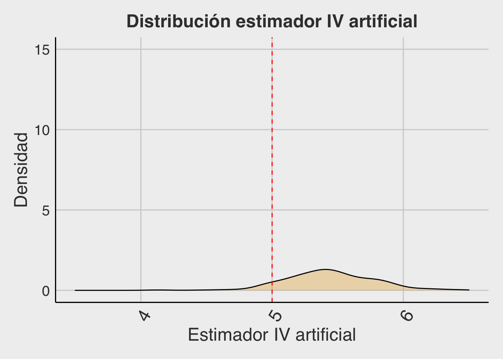

En este tutorial, procederemos a simular una variable instrumental para evaluar su efectividad al ser utilizada en una estimación de 2SLS.
Lo primero que haremos será simular un escenario de dos ecuaciones, que tendrá variables exógenas (generadas por fuera del modelo) y variables endógenas (generadas dentro del modelo). Para eso, pensemos en el siguiente par de ecuaciones (por simplicidad se omite el término constante):
\[ Y_i = \beta X_i + \lambda Q_i + u_i \hspace{0.3 cm} (1)\]
\[ X_i = \gamma Z_i + \delta Q_i + v_i \hspace{0.3 cm} (2) \]
Vemos que la variable \(X_i\) se genera en la ecuación (2) y es a la vez una variable independiente en la ecuación (1). Definiremos los valores de \(\beta = 5\), y de \(\lambda = \gamma = \delta =1\) para estudiar su estimación posterior.
Podemos considerar que tanto \(Q_i\) como \(Z_i\) son variables exógenas, y para efecto de este ejercicio, las simularemos con una distribución normal (0,1) de 300 observaciones (ese sería el tamaño de la muestra en cada escenario). Es decir, podemos pensar que tenemos registro de 300 personas o individuos, lo que genera 300 filas en nuestra planilla.
Q <- rnorm(300,0,1)
Z <- rnorm(300,0,1)Para que el modelo presente endogeneidad en la variable \(X_i\), simularemos ambos errores no observables (\(u_i\), \(v_i\)), en base a una misma distribución normal bivariada, con una correlación entre -1 y 1. Si los errores tienen esta correlación, en la ecuación (1) la variable independiente \(X_i\) (generada en base al error \(v_i\)) se encuentra correlacionada con el error no observable de la ecuación (\(u_i\)), y por lo tanto pasa a ser una variable endógena y su coeficiente estará estimado con sesgo.
corrvalue <- 0.5 # los resultados serán diferentes según cambie este valor - ver gráfico
sigma <- matrix(c(1,corrvalue,corrvalue,1), ncol=2)
epsilon <- rmvnorm(n=300, mean=c(0,0), sigma=sigma)
u_i = epsilon[,1]
v_i = epsilon[,2]Al estimar con OLS esta situación, es esperable que entregue un estimador sesgado, es decir, que su valor esperado no esté en el valor real (que por construcción sabemos que es \(\beta = 5\)). Para chequearlo, correremos 400 simulaciones del caso recién descrito (es decir, repetiremos 400 veces una situación simulada de 300 casos), estimando cada vez \((\beta_{OLS})\).
Observa qué ocurre en este gráfico. cuando se manipula la correlación de los errores ¿Cuál es la relación entre la correlación de los errores simulados y el sesgo?
Ahora, para el caso de correlación 0,5; miraremos qué ocurre con el sesgo de OLS. ¿Dónde debería estar la media de la distribución del coeficiente, y dónde se encuentre realmente?
# Para replicar el gráfico
beta=5
lambda=1
gamma=1
delta=1
corrvalue=0.5
B_OLS <-rep(0,400) #se guardarán acá los betas_OLS con Z original
for(i in 1:400){ #hacemos 400 simulaciones
Q<-rnorm(300,0,1) #Una variable de distribución normal con 300 valores
Z<-rnorm(300,0,1) #Una variable de distribución normal con 300 valores
sigma <- matrix(c(1,corrvalue,corrvalue,1), ncol=2)
epsilon <- rmvnorm(n=300, mean=c(0,0), sigma=sigma) #Este es el origen de la endogeneidad
u=epsilon[,1]
e=epsilon[,2]
X=gamma*Z+delta*Q+e #Calculamos X en función de las simulaciones Z, Q y e
Y=beta*X+lambda*Q+u #Calculamos Y en función de X y las simulaciones Q, y u
reg1<-lm(Y~X+Q) #Estimamos el valor de beta y de lambda de las ecuaciones
B_OLS[i]<-summary(reg1)$coefficients[2,1] #guardamos beta, que debe ser cercano a 5 pero sesgado
}
ggplot(as.data.frame(B_OLS)) +
aes(B_OLS)+
geom_density(alpha=0.3, fill= "#56B4E9") +
geom_vline(xintercept=5, linetype="dashed", color="red")+
theme_fivethirtyeight()+
theme(panel.grid.major = element_blank(),
axis.line = element_line(colour = "black"),
plot.title = element_text(hjust = 0.5,size=18),
text = element_text(size=18),
axis.title = element_text(),
axis.text.x = element_text(angle=60, hjust=1,size=18)) +
xlim(3.5,6.5) + ylim(0,15)+
labs(x="Estimador OLS",
y="Densidad",
title="Distribución estimador OLS")
\[\\[1in]\]
Siguiendo con la simulación de la sección anterior, ya notamos que existe un sesgo en el estimador de OLS, que depende en gran medida de la magnitud de la correlación entre el regresor endógeno (\(X_i\)) y el error no observable.
\[ X_i = \gamma Z_i + \delta Q_i + v_i \hspace{0.3 cm} (2) \]
\[ Y_i = \beta X_i + \lambda Q_i + u_i \hspace{0.3 cm} (1)\]
Ahora probaremos utilizando la variable \(Z_i\) como instrumento de la variable \(X_i\). En nuestra simulación, \(Z\) fue construida de forma completamente exógena. Además, fue parte de la definición de \(X_i\), por lo que cumple también con ser un instrumento relevante.
La función que utilizaremos para realizar 2SLS será:
reg_vi <- ivreg(Y ~ X + Q | Z + Q)Esta vez, miraremos si la media de la distribución del coeficiente sigue sesgada, pero también nos concentraremos en la varianza de nuestro estimador. La simulación genera 400 iteraciones de un escenario de 300 observaciones. Al mirar el gráfico se puede ver que, la distribución se encuentra centrada en el valor esperado (\(\beta = 5\)), pero su varianza es más amplia que el caso OLS. ¿El método de VI logra corregir el sesgo de endogeneidad? ¿Es esperable que la varianza de este estimador sea mayor que la de OLS?
#Se repite gráfico anterior, esta vez guardando:
reg2<-ivreg(Y~X+Q|Z+Q) #Estimamos el valor de beta y de lambda de las ecuaciones mediante 2SLS
B_IV[i]<-summary(reg2)$coefficients[2,1] #guardamos betas IV que es cercano a 5 e insesgado\[\\[1in]\]
Ahora, para cada una de las 400 iteraciones, dentro del gran loop, realizaremos otro loop donde simularemos variables \(Za_i\) (de 300 registros) hasta encontrar una que esté correlacionada con la variable endógena \(X_i\), a través del siguiente código. Una vez se escoge un vector \(Za_i\) que satisface la condición (de relevancia), estimaremos la regresión 2SLS correspondiente y guardaremos el coeficiente \(\beta\) para volver a graficar la distribución de este estimador.
significativo <- 0
while (significativo == 0) { #Se repite el loop hasta que sea siginifcativo
Za <- rnorm(300,0,1) #Esta función genera un vector normal de 300 datos
reg3 <-lm(X~Za) #Esta función realiza una regresión lineal
b <-summary(reg3)$coefficients[2,1] #Aquí y la siguiente línea se guardan coeficientes
se <-summary(reg3)$coefficients[2,2]
if(abs(b)/se > 1.96){ #Esta es la condición de significancia al 95%
reg4<-ivreg(Y~X+Q|Za+Q) #Si es significativo, se estima VI con esa variable
B_IVa[i]=summary(reg4)$coefficients[2,1] #Se guarda el valor estimado para ver la distribución
sig <- 1 #Se corta el loop para esta iteración
}
}
#Se repite el gráfico anterior guardando B_IVaAl realizar este ejercicio, se grafican los 400 valores del estimador \(\beta_Za\), tal y como se muestra a continuación:

¿La estimación es insesgada? ¿Es más o menos eficiente que OLS y que VI? ¿Crees que funciona utilizar una simulación de un instrumento?
\[\\[1in]\]
Utilizar un instrumento artificial no funciona, pues aunque cada iteración en que se escoge aquella variable \(Za_i\) que sí es relevante (porque está correlacionada con \(X_i\)), no es posible asegurar que este NO esté correlacionado con el error no observado (\(u_i\)). Lo anterior se debe a que la exogeneidad del instrumento (\(Cov(Za_i, u_i) = 0\)) es imposible de construir ni de observar. Por lo tanto, para cada caso en que \(Za_i\) es relevante, NO puede asegurarse que sea al mismo tiempo exógena en la misma medida. Van a ocurrir casos en que sí, van a ocurrir casos en que no, es por eso que el estimador sigue estando sesgado, y además, es poco eficiente.
Esto se puede ver en el gráfico que junta las tres distribuciones para los escenarios simulados: OLS, VI, VI-artificial. Analice los gráficos. ¿Qué método entrega una estimación insesgada? ¿Qué método entrega una estimación eficiente?
#Se repiten los tres gráficos anteriores, sobreponiéndolos